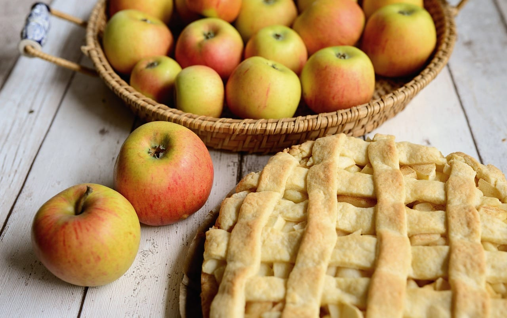

A torta de maçã é uma sobremesa clássica que combina a doçura natural das maçãs com uma massa crocante e amanteigada. Geralmente, as maçãs são temperadas com canela, açúcar e, às vezes, um toque de noz-moscada, criando um recheio aromático e reconfortante. Essa torta é perfeita para ser servida quente, acompanhada de uma bola de sorvete de baunilha ou uma porção de chantilly, proporcionando uma experiência deliciosa e nostálgica que agrada a todos os paladares.